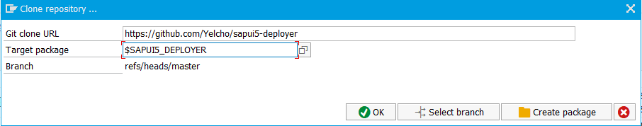

Welcome to SAPUI5-Deployer
SAPUI5-Deployer is a solution for deploying SAPUI5 and OpenUI5 web apps to a SAP ABAP Web Application Server automatically. It is designed to simplify the developer workflow by automating the following steps.
- Download of Github Archive
- Remove wrapper subdirectory from archive
- Minify CSS & Javascript files
- Build Component-preload.js file where required
- Recursively perform above steps for any required Github submodules
- Package up all artifacts into a deployment archive
- Optionally save deployment archive to file system
- Deploy to SAP Internet Communications Framework
- Invalidate the UI5 cache buster
 |
System Requirements
This solution was originally built on a SAP WAS ABAP 7.31 SP5 system with the SAP_UI software component also installed. There is no reason it should not work on all releases that have the SAP provided function module /ui5/ui5_repository_load_http.
Most recently the code was refactored on a SAP WAS ABAP 7.50 SP2 system so you may need to refactor some of the code if you are on an earlier release.
Installation requires the abapGit project by @larshp.

Instructions for installing abapGit can be found here.
If you haven't seen abapGit before I highly recommend you take a good look at it. If you find it useful perhaps you could consider joining the project and making your own contributions?
Installation
SSL setup
If you have not performed SSL setup and installation of root certificates as part of the abapGit installation you should do it now - otherwise you can skip this step.
Refer to the relevant SAP Documentation Configuring the SAP Web AS for Supporting SSL.
As you will only be using this code on a development system you may choose to use a self-signed certificate.
Download the CA root certificate(s) that GitHub uses from https://www.digicert.com/digicert-root-certificates.htm. You can find which specific certificate GitHub uses from the GitHub documentation or use your web browser to determine it.
Install the certificate(s) in STRUST under "SSL System Client SSL Client (Anonymous)"
Restart ICM using transaction SMICM
The certificate list should end up looking something like this:

Clone Repository
Use the abapGit `Clone` option to link an ABAP package to my GitHub repository. I recommend using a local package just for this purpose called something like $SAPUI5DEPLOYER. You are very unlikely to want to use a transportable package for this project.

Select the `Pull` option to load all the ABAP artifacts into your nominated package.
How To Use
A sample program is included that calls the YCL_GITHIB_DEPLOYER class to deploy the grahamrobbo/demojam repository. Check the .Ui5RepositoryUploadParameters file to see where the app will be deployed to.
REPORT ygithub_deploy_test.
SELECTION-SCREEN BEGIN OF BLOCK blk_main.
PARAMETERS:
git_repo TYPE string OBLIGATORY LOWER CASE
DEFAULT `grahamrobbo/demojam`,
branch TYPE string OBLIGATORY LOWER CASE
DEFAULT `master`,
test TYPE boolean DEFAULT 'X'.
SELECTION-SCREEN END OF BLOCK blk_main.
START-OF-SELECTION.
TRY.
ycl_github_deployer=>deploy(
repository = git_repo
branch = branch
test_only = test ).
CATCH cx_root INTO DATA(exc).
MESSAGE exc TYPE 'I' DISPLAY LIKE 'E'.
ENDTRY.
The "TEST" flag will build the complete archive but, rather than deploying it, will allow you to save it to your local file system.
Continuous Deployment
If you want to implement a Continuous Deployment solution so that the SAPUI5 app is automatically deployed when changes are committed I suggest the following two methods.
If your infrastructure guys will allow HTTP calls from outside your corporate network to be passed through to your development WAS you can build a ICF handler that can be called using a GitHub Webhook whenever there is a commit or branch merge to master. This HTTP call could pass through a SAP Web Dispatcher or go to another intermediate server that could handle the webhook call. When triggered this handler should check the API call for validity before calling the YCL_GITHUB_DEPLOYER class. In my opinion this is the best way to trigger deployment as the code is only executed when actually required. See sample ICF handler YCL_GITHUB_WEBHOOK_HANDLER for an example.
If you are unable to use the GitHub Webhook method you can build a program that calls the GitHub API to see if the SHA-1 hash of the master branch has changed. If it has then the YCL_GITHUB_DEPLOYER class can be called. I suggest storing the SHA-1 hash in a server-side cookie (CL_BSP_SERVER_SIDE_COOKIE) for this purpose. This program would need to be scheduled as a regular background job so that it regularly checks if a deployment is required.

Authors and Contributors
SAPUI5-Deployer was built in February 2015 and released for Aussie DemoJam 2015 by Graham Robinson (@grahamrobbo) in May 2015.
Version 2 - this version - was released in August 2017 primarily to support the use of abapGit to install the repo on yur system.
Much help came from Michael Moessner - especially with the changes to function module /UI5/UI5_REPOSITORY_LOAD_HTTP and the code to unwrap the Github archive.
Plenty of inspiration and ideas were generated by Matt Harding(@mattieharding) and Nigel James(@njames).
Thanks also to Uwe Fetzer (@se38) for his zJSON project which was used in Version 1.
Thank you
Support or Contact
Offered on an "as is" basis. I will try and help you with issues if I can but I can't do more than I can do or have time to do.